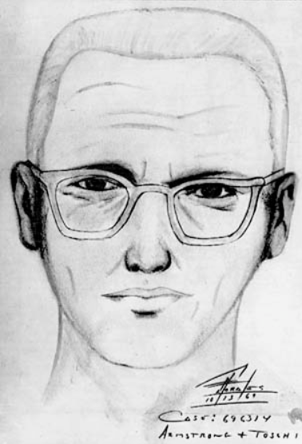

ARCHIVE #000
MISTERIOS
SIN RESOLVER
Algunos expedientes nunca encontraron un cierre.
EXPLORAR ARCHIVOSEXPEDIENTES
CASOS DESTACADOS


ARCHIVE #001
Jack the Ripper
- Archivo
- ARCHIVE #001
- Nombre del caso
- Jack the Ripper
- Estado
- UNSOLVED
- Ubicación
- Londres, Inglaterra
- Año
- 1888
EL CASO
Mató al menos a cinco mujeres en Whitechapel en 1888 y nunca fue capturado. Los asesinatos ocurrieron entre agosto y noviembre de 1888. La policía cerró oficialmente los archivos en 1892.
LÍNEA DE TIEMPO
- 1888 — Agosto a noviembre Ocurren los asesinatos en Whitechapel, Londres.
- 1888 Aparece la carta “Dear Boss”, la primera vez que se usa el nombre “Jack the Ripper”. La policía la toma en serio cuando la cuarta víctima, Catherine Eddowes, aparece con parte de la oreja cortada.
- Noviembre de 1888 Se catalogó el informe post mortem con la referencia MEPO 3/141.
- 1892 La policía cierra oficialmente los archivos del caso.
- 2024 Aparece un expediente policial perdido que perteneció al inspector Joseph Helson.
EVIDENCIAS
Carta “Dear Boss”
Fue la primera vez que se usó el nombre “Jack the Ripper”. La policía la tomó en serio cuando la cuarta víctima, Catherine Eddowes, apareció con parte de la oreja cortada. Está en los Archivos Nacionales de Kew (ref. MEPO 3/3153).
Carta a la Whitechapel Vigilance Committee
Hay una carta firmada como “Jack el Destripador” dirigida al Dr. Openshaw del London Hospital sobre el riñón humano enviado a G. Lusk (ref. MEPO 3/3157).
Informe post mortem
El informe de noviembre de 1888 está catalogado como MEPO 3/141.
Archivo recuperado
En 2024 apareció un expediente policial perdido, que perteneció al inspector Joseph Helson.
INVESTIGACIÓN
La policía tomó en serio la carta “Dear Boss” cuando la cuarta víctima, Catherine Eddowes, apareció con parte de la oreja cortada. Los archivos del caso se cerraron oficialmente en 1892.
TEORÍAS
- Aaron Kosminski: peluquero polaco internado en un asilo. En 2014 se afirmó que un ADN en un chal lo vinculaba con el caso, pero el análisis es muy criticado y no es concluyente.
- Montague Druitt: abogado y maestro hallado muerto en el Támesis a finales de 1888. Algunos sostienen que su muerte explica el fin de los crímenes, pero hay poca evidencia directa.
- Francis Tumblety: médico estadounidense sospechoso en su época, sin pruebas que lo ubiquen en los crímenes.
- Walter Sickert: pintor señalado por especulaciones modernas, rechazadas por la mayoría de los historiadores.
- Conspiración real o masónica: sugiere que el crimen involucraba a la corona. Está desacreditada por falta de fundamento.
PREGUNTAS SIN RESPUESTA
- ¿Quién fue el asesino y actuó solo?
- ¿Por qué cesaron los crímenes tras noviembre de 1888?
- ¿Cuántas víctimas hubo realmente? Se aceptan cinco “canónicas”, pero otras muertes se debaten.
- ¿Son auténticas las cartas “Dear Boss” (Querido Jefe) y “From Hell” (Desde el infierno) o fueron bromas?
- ¿Qué significa la inscripción de Goulston Street y por qué importó el trozo de delantal de Catherine Eddowes?
FUENTES
- Yahoo — “Jack the Ripper police file made public after 136 years”.
- National Archives — carta “Dear Boss” (MEPO 3/3153).
- National Archives — carta a la Whitechapel Vigilance Committee (MEPO 3/3157).
- National Archives — informe post mortem de noviembre de 1888 (MEPO 3/141).
- Casebook.org — repositorio público sobre el caso: víctimas, sospechosos, cartas y documentos.
- Philip Sugden, The Complete History of Jack the Ripper.
ARCHIVE #002
Zodiac Killer
- Archivo
- ARCHIVE #002
- Nombre del caso
- Zodiac Killer
- Estado
- UNSOLVED
- Ubicación
- California, EE. UU.
- Año
- 1968–1969
EL CASO
El FBI atribuye cinco muertes en el Área de la Bahía, pero en una carta él dijo haber matado hasta 37 personas. Su identidad sigue siendo desconocida.
LÍNEA DE TIEMPO
- 1968–1969 El Zodiac Killer envía cartas y criptogramas a los periódicos.
- 1969 El San Francisco Chronicle recibe el cifrado “340”.
- Sin fecha registrada Un maestro de Salinas y su esposa resuelven el cifrado “408”.
- 2020 David Oranchak, Jarl Van Eycke y Sam Blake resuelven el cifrado “340”. El FBI verifica la solución, que no revela la identidad del asesino.
EVIDENCIAS
Cartas y criptogramas
Envió mensajes cifrados a los periódicos. Uno de los cifrados usaba más de 50 símbolos para representar las 26 letras.
Cifrado “340”
Lo recibió el San Francisco Chronicle en 1969. Lo resolvieron en 2020 David Oranchak, Jarl Van Eycke y Sam Blake, y el FBI verificó la solución. No revela la identidad del asesino.
Cifrado “408”
Lo resolvieron antes un maestro de Salinas y su esposa.
Trabajo del FBI
Nunca abrió un caso propio, pero apoyó a la policía local con análisis de escritura, criptoanálisis y huellas. El FBI dice que el caso sigue siendo una investigación activa.
INVESTIGACIÓN
El FBI nunca abrió un caso propio, pero apoyó a la policía local con análisis de escritura, criptoanálisis y huellas. El FBI dice que el caso sigue siendo una investigación activa.
TEORÍAS
- Arthur Leigh Allen: principal sospechoso de la policía por años. Su ADN y sus huellas no coincidieron con las pruebas disponibles.
- Gary Francis Poste: señalado en 2021 por un grupo de investigadores privados. La policía de San Francisco no lo aceptó.
- Lawrence Kane y otros nombres: propuestos por aficionados, sin pruebas sólidas.
- Múltiples autores: hay quien plantea que no todos los ataques ni cartas son del mismo individuo.
PREGUNTAS SIN RESPUESTA
- ¿Cuál es su identidad?
- ¿Cuántas víctimas tuvo? Él se atribuyó 37, pero solo 5 muertes y 2 sobrevivientes están confirmados.
- ¿Qué dicen los cifrados sin resolver? El Z340 se descifró en diciembre de 2020, pero otros siguen abiertos.
- ¿Por qué cesó la actividad tras principios de los años 70?
- ¿Se asocia el caso de Cheri Jo Bates (1966) con él?
FUENTES
- Kion546 — atribución de muertes y estado activo del caso según el FBI.
- Legends of America — cartas y criptogramas enviados a los periódicos.
- Morungexpress — resolución del cifrado “340” en 2020.
- Pressreader — resolución y verificación del cifrado “340”.
- Newschannel5 — cifrado “408” y apoyo del FBI a la policía local.
- Archivo del FBI — expediente del caso Zodiac Killer.
- Robert Graysmith, Zodiac.
ARCHIVE #003
Black Dahlia
- Archivo
- ARCHIVE #003
- Nombre del caso
- Black Dahlia
- Estado
- UNSOLVED
- Ubicación
- Los Ángeles, EE. UU.
- Año
- 1947
EL CASO
Elizabeth Short (1924–1947), nacida en Boston, Massachusetts, se mudó a Los Ángeles con el sueño de ser actriz. La prensa la apodó “Dalia Negra”, al parecer por la película The Blue Dahlia (1946) y por su pelo negro y su ropa oscura.
El 9 de enero de 1947 la vieron por última vez en el hotel Biltmore, en Los Ángeles. Robert “Red” Manley la había llevado hasta allí. El 15 de enero de 1947, una vecina, Betty Bersinger, encontró el cuerpo en un terreno baldío de Leimert Park. Estaba cortado en dos a la altura de la cintura, sin sangre y lavado, y tenía cortes en la boca hasta las orejas. El cuerpo estaba colocado de forma deliberada. La causa de muerte fue hemorragia por heridas en el rostro y golpes en la cabeza.
El caso sigue sin resolverse y es uno de los más famosos de Estados Unidos. Inspiró libros y películas, como The Black Dahlia (2006).
LÍNEA DE TIEMPO
- 1924 Nace Elizabeth Short en Boston, Massachusetts.
- 9 de enero de 1947 La ven por última vez en el hotel Biltmore, Los Ángeles. Robert “Red” Manley la había llevado hasta allí.
- 15 de enero de 1947 Betty Bersinger encuentra el cuerpo en un terreno baldío de Leimert Park.
- 24 de enero de 1947 Llega al Los Angeles Examiner un paquete con las pertenencias de Elizabeth Short.
EVIDENCIAS
El cuerpo y su posición
Las heridas, la ausencia de sangre y el hecho de que estuviera lavado y colocado mostraban que el asesino la había matado en otro lugar. También sugerían conocimientos de anatomía, lo que alimentó la sospecha sobre un médico.
Huellas dactilares
El FBI identificó a Elizabeth Short comparando sus huellas con las de una solicitud de trabajo que había hecho tiempo atrás.
El paquete enviado a la prensa
El 24 de enero llegó al Los Angeles Examiner un paquete con su certificado de nacimiento, tarjetas, fotos y una libreta de direcciones. Venía con una nota hecha con letras recortadas de periódico (“Here is Dahlia's belongings”) y las cosas estaban limpiadas con gasolina para borrar huellas.
Pruebas en la escena y objetos hallados
Cerca del cuerpo había una bolsa de cemento con manchas de sangre, además de marcas de pisadas y de llantas. Días después aparecieron su bolso y sus zapatos en un basurero.
INVESTIGACIÓN
El LAPD siguió miles de pistas y recibió decenas de falsas confesiones. Hubo muchos sospechosos, entre ellos Robert Manley (descartado), Mark Hansen y el doctor George Hodel (señalado años después por su propio hijo, Steve Hodel). Ninguno fue condenado.
TEORÍAS
El estado del cuerpo sugería conocimientos de anatomía, lo que alimentó la sospecha sobre un médico.
El doctor George Hodel fue señalado años después por su propio hijo, Steve Hodel.
PREGUNTAS SIN RESPUESTA
- ¿Quién mató a Elizabeth Short en 1947?
- ¿Dónde estuvo entre su desaparición y el hallazgo del cuerpo, y dónde la mataron? No había sangre en el lugar donde apareció.
- ¿Por qué le hicieron lesiones tan específicas y cortaron el cuerpo en dos?
- ¿Son auténticas las notas del supuesto “Vengador de la Dalia Negra” enviadas a la prensa?
- Robert “Red” Manley, el último que la vio, fue investigado y descartado tras pasar varios polígrafos. ¿Por qué no se concretaron otros sospechosos?
- ¿Cuántas de las muchas confesiones falsas se investigaron a fondo?
FUENTES
- FBI Records: The Vault — archivo del caso Black Dahlia.
- Steve Hodel, Black Dahlia Avenger (2003), que acusa a su padre; muy debatido.
- John Gilmore, Severed (1994).
- Piu Eatwell, Black Dahlia, Red Rose (2017).
- Archivo del Los Angeles Times sobre el caso.
ARCHIVO 404
SOBRE EL ARCHIVO
Un espacio para los expedientes que nunca encontraron un cierre.
¿QUÉ ES ARCHIVO 404?
Archivo 404 es una recopilación de casos reales que permanecen sin resolver. Explora los hechos, las evidencias, las teorías y las preguntas que todavía permanecen abiertas. El nombre hace referencia a esos expedientes que, como una página que no se encuentra, siguen sin una respuesta definitiva.
OBJETIVO DEL PROYECTO
Reunir y ordenar la información disponible sobre casos sin resolver para que cualquier persona pueda consultarla de forma clara, sin presentar como definitivo lo que todavía no lo está.
QUÉ TIPO DE CASOS RECOPILA
Casos reales de carácter histórico y criminal que permanecen abiertos o cuya resolución es discutida. Los expedientes reunidos proceden de lugares y épocas distintos, y comparten la misma condición: no existe una respuesta cerrada y aceptada de forma unánime.
QUÉ SIGNIFICA “SIN RESOLVER”
Que un caso figure como UNSOLVED significa que no se ha identificado y condenado a un responsable, o que la explicación oficial existente es objeto de debate. No significa que no se haya investigado: muchos de estos expedientes fueron archivados después de largas investigaciones y algunos permanecen abiertos hasta hoy.
CÓMO SE ORGANIZA LA INFORMACIÓN
Cada expediente sigue la misma estructura: número de archivo, nombre del caso, estado, ubicación, año, imagen, resumen de lo ocurrido, línea de tiempo, evidencias, investigación, teorías, preguntas sin respuesta y fuentes. Así, todos los casos se pueden leer y comparar de la misma manera.
HECHOS, TEORÍAS E HIPÓTESIS
Diferenciarlos es fundamental. Los hechos son los datos comprobados y documentados. Las teorías son explicaciones construidas a partir de esos datos. Las hipótesis son posibilidades que todavía no han sido demostradas. Mantenerlos separados permite consultar la información sin confundir lo que ocurrió con lo que se supone que ocurrió.
LA EXPERIENCIA DEL USUARIO
El archivo busca una lectura pausada y ordenada, parecida a la consulta de un expediente. Cada caso se presenta de forma uniforme y se pueden consultar las fuentes de donde proviene la información, para que quien explore pueda decidir por sí mismo qué peso dar a cada dato.
ARCHIVO 404
FUENTES
Registro de las fuentes consultadas para la investigación de cada caso.
FUENTES POR CASO
Cada fuente indica el expediente del que proviene y el material que aportó. Solo se han registrado aquí las fuentes citadas en la investigación de los casos.
| Caso | Fuente | Tipo | Material aportado |
|---|---|---|---|
| ARCHIVE #001 — Jack the Ripper | Yahoo | Artículo periodístico | “Jack the Ripper police file made public after 136 years” y expediente policial recuperado en 2024. |
| ARCHIVE #001 — Jack the Ripper | National Archives | Archivo histórico | Carta “Dear Boss” (MEPO 3/3153). |
| ARCHIVE #001 — Jack the Ripper | National Archives | Archivo histórico | Carta a la Whitechapel Vigilance Committee (MEPO 3/3157). |
| ARCHIVE #001 — Jack the Ripper | National Archives | Archivo histórico | Informe post mortem de noviembre de 1888 (MEPO 3/141). |
| ARCHIVE #001 — Jack the Ripper | Casebook.org | Otra fuente confiable | Repositorio público sobre víctimas, sospechosos, cartas y documentos del caso. |
| ARCHIVE #001 — Jack the Ripper | Philip Sugden, The Complete History of Jack the Ripper | Libro de investigación | Historia completa del caso y análisis de los sospechosos. |
| ARCHIVE #002 — Zodiac Killer | Kion546 | Artículo periodístico | Muertes atribuidas por el FBI y estado activo de la investigación. |
| ARCHIVE #002 — Zodiac Killer | Legends of America | Otra fuente confiable | Cartas y criptogramas enviados a los periódicos. |
| ARCHIVE #002 — Zodiac Killer | Morungexpress | Artículo periodístico | Resolución del cifrado “340” en 2020. |
| ARCHIVE #002 — Zodiac Killer | Pressreader | Artículo periodístico | Resolución del cifrado “340” y verificación del FBI. |
| ARCHIVE #002 — Zodiac Killer | Newschannel5 | Artículo periodístico | Cifrado “408” y apoyo del FBI a la policía local. |
| ARCHIVE #002 — Zodiac Killer | Archivo del FBI | Fuente policial/oficial | Expediente del caso Zodiac Killer. |
| ARCHIVE #002 — Zodiac Killer | Robert Graysmith, Zodiac | Libro de investigación | Investigación del caso y de los cifrados. |
| ARCHIVE #003 — Black Dahlia | FBI Records: The Vault | Fuente policial/oficial | Archivo del caso Black Dahlia. |
| ARCHIVE #003 — Black Dahlia | Steve Hodel, Black Dahlia Avenger (2003) | Libro de investigación | Acusa a su padre, George Hodel; muy debatido. |
| ARCHIVE #003 — Black Dahlia | John Gilmore, Severed (1994) | Libro de investigación | Investigación del caso y posibles vínculos. |
| ARCHIVE #003 — Black Dahlia | Piu Eatwell, Black Dahlia, Red Rose (2017) | Libro de investigación | Revisión del caso y de los sospechosos. |
| ARCHIVE #003 — Black Dahlia | Archivo del Los Angeles Times | Artículo periodístico | Cobertura histórica del caso. |
FOTOGRAFÍAS UTILIZADAS
| Archivo | Caso | Descripción |
|---|---|---|
| imagenes/jack.png | ARCHIVE #001 — Jack the Ripper | Ilustración histórica de Jack the Ripper. |
| imagenes/zodiac.png | ARCHIVE #002 — Zodiac Killer | Retrato hablado del Zodiac Killer realizado por la policía. |
| imagenes/elizabeth.png | ARCHIVE #003 — Black Dahlia | Fotografía de Elizabeth Short, conocida como Black Dahlia. |